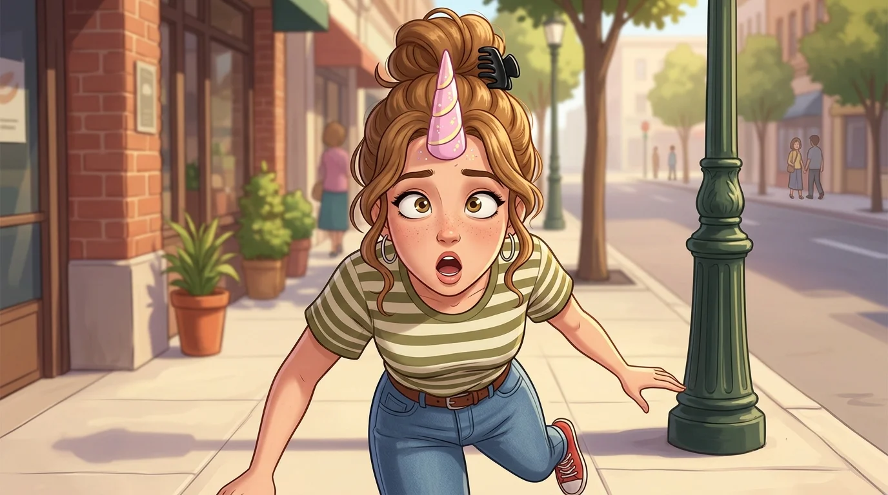

DESPISTADA CRÓNICA
Gag oficial · Una farola me puso cuerno (CD 1)
Chocarse con una farola y hacerse un cuerno
Iba tan ensimismada mirando el móvil y riéndose de tonterías que se estampó de lleno contra una farola en pleno paso de cebra. El chichón resultante fue tan monumental que parecía un cuerno de unicornio mágico.
Perfil Canónico
👟 Lorena Torbellino